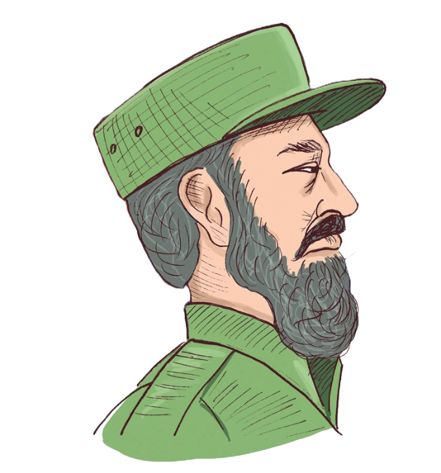

1. Fidel practicó béisbol y soñó con llegar a las Grandes Ligas.
De joven fue pitcher en el equipo del Colegio de Belén y tenía buen brazo. Incluso corren historias (algunas debatidas) sobre intentos de fichaje por parte de equipos estadounidenses. Aunque el béisbol era una pasión, eligió otra liga: la de la historia.